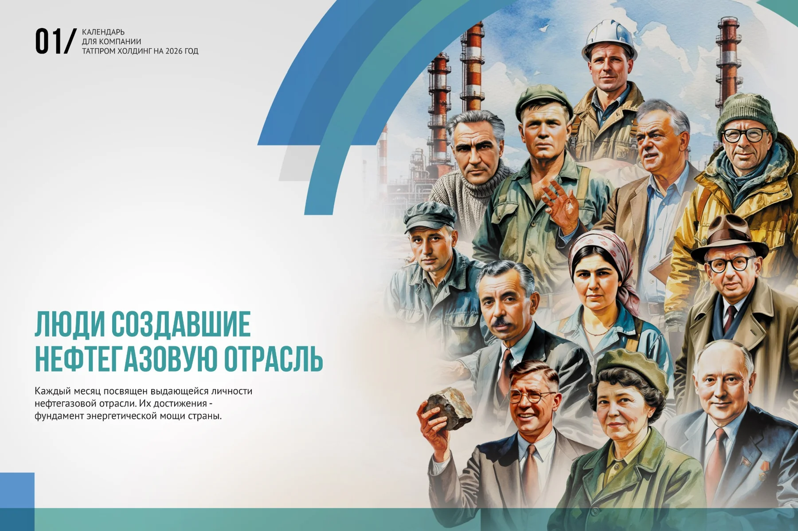
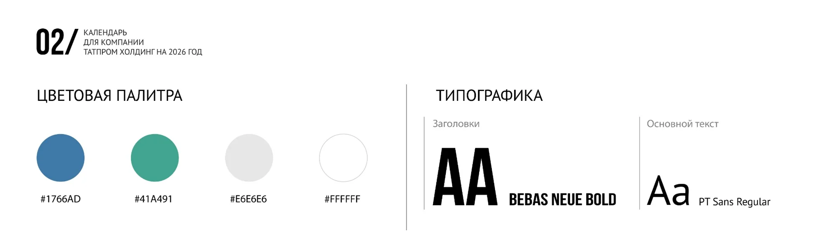
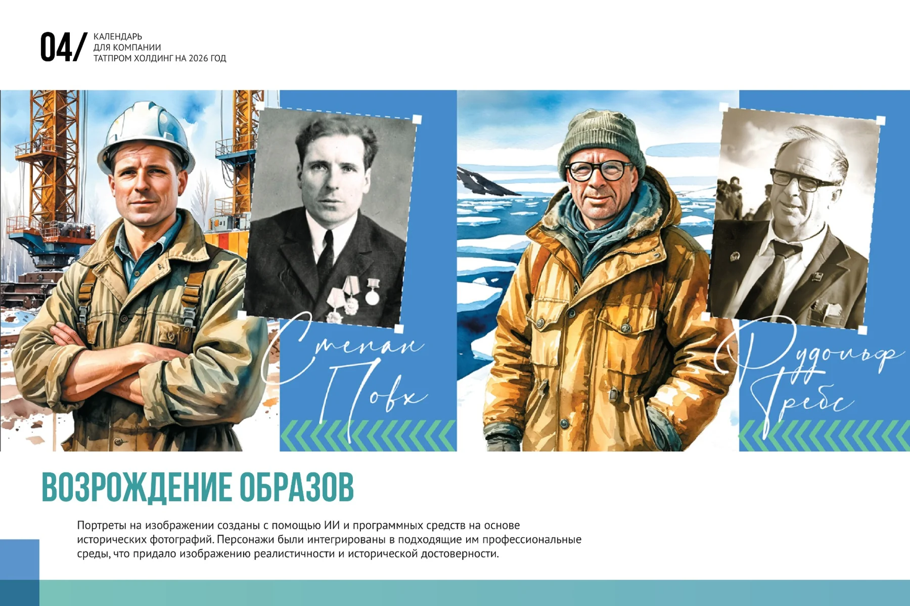
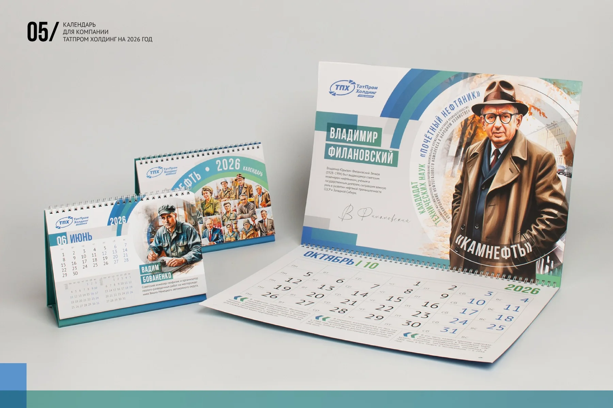
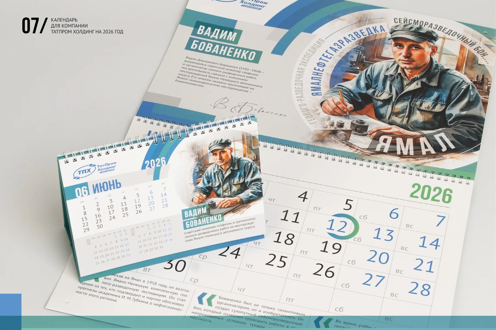
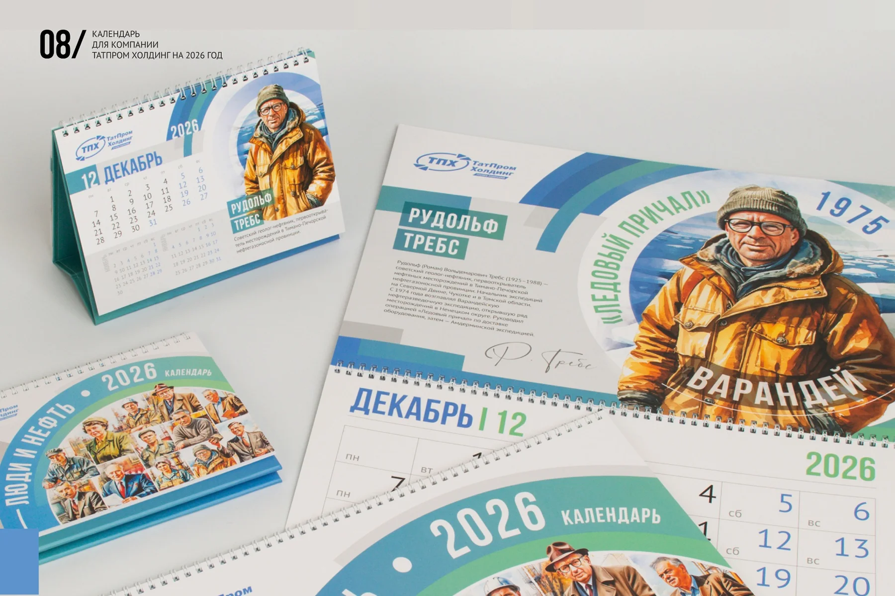

ТАТПРОМ ХОЛДИНГ / КАЛЕНДАРЬ / 2026
Люди
История Энергия
Календарь «Татпром Холдинг» на 2026 год. Двенадцать историй о людях отрасли в настенном и настольном форматах.

01 / КОНЦЕПЦИЯ
История отрасли
через её героев.
Календарь для «Татпром Холдинг» посвящён людям, чья работа связана с развитием нефтегазовой отрасли. Каждый месяц — отдельный герой: портрет, имя и краткая история его вклада. Вместе они образуют последовательный рассказ на весь год.

02 / ВИЗУАЛЬНАЯ СИСТЕМА
Общая композиция.
Разные характеры.
Синие и бирюзовые дуги обрамляют портреты и объединяют серию. Белое поле оставляет место для календарной сетки и биографии. Крупный заголовок, подпись и иллюстрация помогают различать героев, сохраняя общий строй страниц.

03 / ПОРТРЕТЫ
Исторические фотографии.
Новая иллюстративная подача.
Портреты созданы с помощью ИИ и графических программ на основе исторических фотографий. Герои помещены в профессиональное окружение. Это художественная интерпретация, которая связывает архивный материал с единой стилистикой календаря.

04 / ДВА ФОРМАТА
На стене.
На рабочем столе.
Визуальная система адаптирована для настенного и настольного перекидных календарей. Портрет, биографический блок и календарная сетка сохраняют узнаваемость в обоих форматах.


05 / ВСЯ СЕРИЯ
Двенадцать месяцев.
Двенадцать историй.
Полная серия настенного календаря. Нажмите на страницу, чтобы рассмотреть макет крупнее.
01Январь
02Февраль
03Март
04Апрель
05Май
06Июнь
07Июль
08Август
09Сентябрь
10Октябрь
11Ноябрь
12Декабрь
Выберите месяц, чтобы рассмотреть крупнее.
